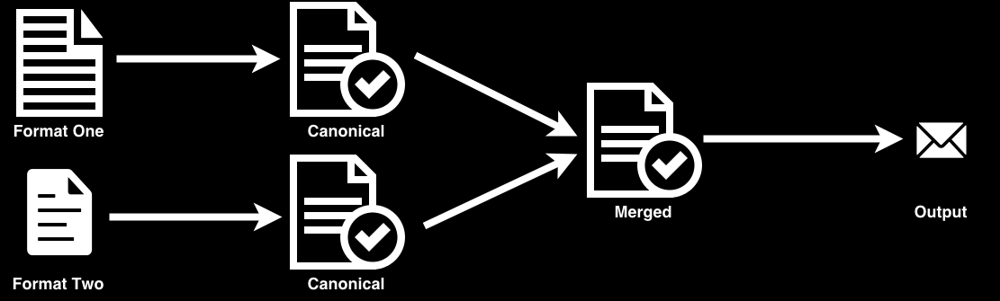
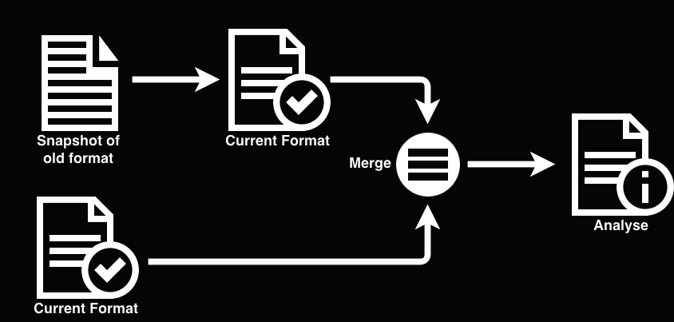

"It's been compiling for three days"

| Mega Bank | Programmer | |||
|---|---|---|---|---|
| Hit points | ∞ | Hit points | 7 | |
| Strength | 100 | Strength | 5 | |
| Dexterity | 1 | Dexterity | 18 | |
| Intelligence | -12 | Intelligence | 24 | |
| Malice | endless | Political skills | 1 | |
| Loyalty | 0 | Loyalty | misplaced | |
Reports and reconciliations
Banking bread and butter

First name,Surname,Company,Company account,Postcode,Pet names Chastity,Hayes,Auctor Non Feugiat Corporation,NL83ZWAJ4204089617,A5T 3G1,"Paula, Imelda, Rooney, Bruno" Lois,Ayers,Sit Industries,BE14688500072856,W8F 0J1,"Joseph, Irma, Ursula, Jordan" Acton,Campbell,Rutrum Non PC,AL47992650115975242309412187,U0G 0H2,"Tatyana, Linda, Leo, Cole" Emma,Hogan,Nunc Sit Amet Foundation,NO6641790931190,U8E 4I3,"Moses, Wanda, Naomi, Jamalia" Denton,Klein,Ante Ltd,GB77DWXH12303574957231,D4N 2K1,"Holly, Carissa, Sheila, Sylvia"
Company,Company ID,Fee owing,Zip code AUCTOR NON FEUGIAT CORPORATION,NL83ZWAJ4204089617,0.00,67608 SIT INDUSTRIES,BE14688500072856,0.00,15840 RUTRUM NON PC,AL47992650115975242309412187,0.00,74464 NUNC SIT AMET FOUNDATION,NO6641790931190,0.00,70835 ANTE LTD,GB77DWXH12303574957231,0.00,78121
We need an automated proof - a reconciliation
Run the new code and production code against the same inputs and diff the results

| (input) | (output) |
(QR code to project links and email addresses)